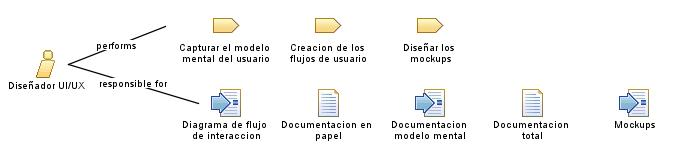

| Role: Diseñador UI/UX |
 |
|
 |
||
| Primary Performs | ||
|---|---|---|
| Modifies |
|
|
El diseñador UI/UX se encarga de:
Capturar el modelo mental del usuario |
| Skills | El diseñador UI/UX tiene algunas habilidades como:
Diseño de mockups intuitivos y atractivos |
|---|
El diseñador UI/UX:
Debe tener buena creatividad |